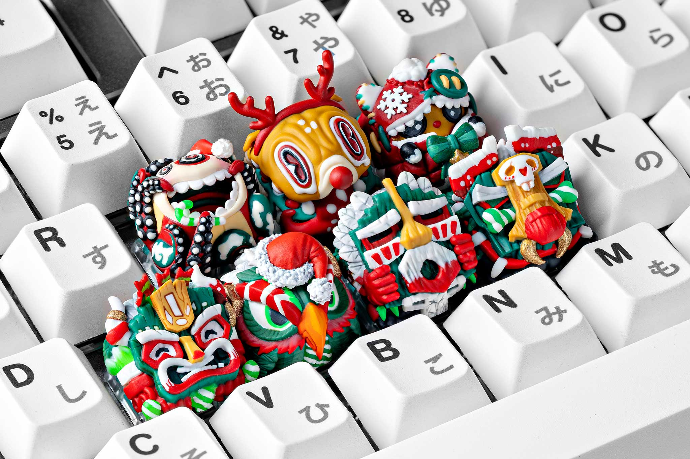
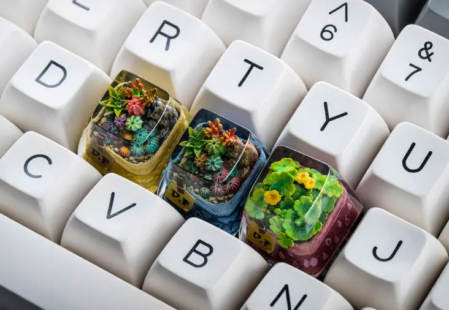
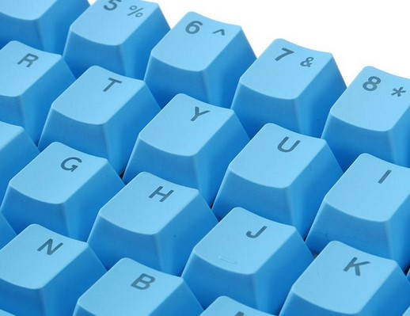
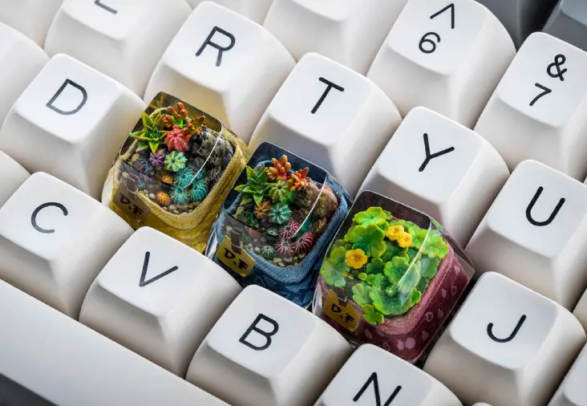
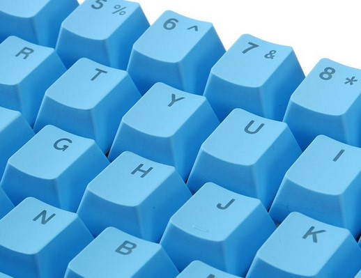

Los Keycaps son los “capuchones” de nuestras teclas, lo que martilleamos al usar nuestro teclado. Estos se fabrican por inyección de plástico en moldes metálicos generalmente, pero también se pueden realizar por impresión 3D y resina epoxica.

 


